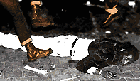

| der artikel die gegenwehr? das interview update 1.1 |
Der Artikel erschient erstmals im wildpark - Magazin im Frühjahr 1996.
(eingestellt im Sommer 1997)
 ... free speech for nazis?
... free speech for nazis?
"Wir sind dabei, einen fundamentalen Glaubenssatz Amerikas aufzugeben: Du kannst Deine eigenen Rechte nicht schützen, wenn Du nicht auch die Rechte derjenigen schützt, die Du verabscheust oder sogar fürchtest", so ein Redakteur der netzkundigen Silicon Valley Tageszeitung "San Jose Mercury News" anläßlich der stets aktuellen Debatte über Redefreiheit und Zensur im Internet. Die überwältigende Mehrheit der Internetbenutzer, wie auch der Zeitungsredakteur, bezieht im digitalen 21. Jahrhundert eine Position, die sich an den berühmten Brief Voltaires an M. le Riche anlehnt, "I detest what you write, but I would give my life to make it possible for you to continue to write." Aber sollen den auch Neo - Nazis und Holocaust Revisionisten mit einem Verweis auf die freie Meinungsäußerung ungestört das Internet für ihre menschenverachtende Agitation benutzen dürfen ?
Links zum Thema:
Simon-Wiesenthal-Center
Hate on the Net
Hate Page of the week
Daten - Nazis
Propaganda - Pusher
In ihren Strategiepapieren weisen sie daraufhin, wie man Diskussionen in News Groups dominieren kann, um neue Mitglieder zu rekrutieren. Unpolitische News Groups, wie z.B. alt.fan.barry-manilow sollen aufgewirbelt werden: "Schreibt eine Nachricht mit dem Titel 'Kill all niggers', und ihr werdet sehen, wie die Liberalen die Diskussion über Monate für euch am Laufen halten", so ein anonymer User. Die National Alliance veranstaltet ab und an Hi-Tech Drive-Bys wie in Texas, wo sie das E- Mail Account eines Professors gehackt hatten und knapp 20.000 User mit rassistischen und anti-semitischen E-Mails attackierten.
Mailing Listen und Internet Relay
Chats (IRC) dienen der internen Kommunikation, während das World Wide
Web mit seinen Multimedia-Fähigkeiten ideal für Propaganda ist.
Dort veröffentlichen sie Listen mit Adressen von Antifaschisten und
unterrichten on-line über den Bau der richtigen Bombe für den
jeweiligen E insatzbereich. Jede Facette rechtsextremer Aktivitäten
wird im WWW abgedeckt. Das Nazi-Plattenlabel Resistance Records ist mit
Audio-Files und Informationen über ihre Veröffentlichungen ebenso
vertreten wie die Christian Identity Kirche, die die Todesstrafe für
Homosexuelle fordert.

Vernetzung überalles

 Bedingt durch die weltweite Vernetzung können
deutsche Neo - Nazis hier verbotene Literatur und Symbole downloaden und
für ihre Pamphlete verwenden. Der notorische Holocaust Leugner Ernst
Zündel aus Kanada bietet seinen deutschen "Volksgenossen" eine deutsche
Sektion in seinen Webseiten an, und die "Stormfront White Nationalist
Resource Page" von Don Black, ansäßig in Florida, bietet nicht
nur deutsche Übersetzungen an, sondern arbeitet auch an einer
Vernetzung mit der rechtsextremen deutschen Mailbox "Thule-Netz". Das
kalifornische Institute for Historical Review, das führende Institut
für Holocaust Revisionismus in Nordamerika, publiziert auf seinen
Webseiten die neuesten pseudo - wissenschaftlichen Texte, die wiederholt
Altes besagen: daß der Holocaust nur eine Erfindung des Weltzionismus
sei.
Bedingt durch die weltweite Vernetzung können
deutsche Neo - Nazis hier verbotene Literatur und Symbole downloaden und
für ihre Pamphlete verwenden. Der notorische Holocaust Leugner Ernst
Zündel aus Kanada bietet seinen deutschen "Volksgenossen" eine deutsche
Sektion in seinen Webseiten an, und die "Stormfront White Nationalist
Resource Page" von Don Black, ansäßig in Florida, bietet nicht
nur deutsche Übersetzungen an, sondern arbeitet auch an einer
Vernetzung mit der rechtsextremen deutschen Mailbox "Thule-Netz". Das
kalifornische Institute for Historical Review, das führende Institut
für Holocaust Revisionismus in Nordamerika, publiziert auf seinen
Webseiten die neuesten pseudo - wissenschaftlichen Texte, die wiederholt
Altes besagen: daß der Holocaust nur eine Erfindung des Weltzionismus
sei.

 Nichtsdestotrotz erntet man nur verständnislose Blicke bei
liberalen Netz-Usern, wenn man dafür plädiert, Nazis jegliche
öffentliche Plattform zu verwehren. Man stimme zwar mit ihnen nicht
überein, aber sie haben einen "point of view" und den sollen sie
vertreten können. Eben nicht. Aber wieso?
Nichtsdestotrotz erntet man nur verständnislose Blicke bei
liberalen Netz-Usern, wenn man dafür plädiert, Nazis jegliche
öffentliche Plattform zu verwehren. Man stimme zwar mit ihnen nicht
überein, aber sie haben einen "point of view" und den sollen sie
vertreten können. Eben nicht. Aber wieso?

Gewalt gegen Minderheiten



Überall, wo Faschisten ihre Politik öffentlich vertreten und organisieren können, schnellt die Gewalt gegen Minderheiten hoch. So haben mehrere empirische Unteruchungen gezeigt, daß z.B. der Wahlsieg der faschistischen British National Party bei einer Stadtteilwahl, Isle of Dogs/ East London im Jahre '93 zu einem verstärkten Anstieg von Gewalttaten gegen Schwarze und andere Minderheiten führte. Der Rassenhaß, den die BNP predigt, fand sein Niederklang in Gewalttaten. Es gibt eine Verbindung zwischen Wort und Tat. Und es gibt eine Verbindung zwischen virtueller und realer Welt.

Das zentrale Ziel


 Zweitens ist das zentrale Ziel vom Faschismus die Zerstörung der
Demokratie. Nach der Machtübernahme Hitlers '33 feierten die Nazis die
Abschaffung aller demokratischen Freiheiten, doch davor versicherten sie
treuselig immer wieder, daß sie die Freiheiten Andersdenkender nicht
beschneiden würden. In kleinen Zirkeln und in ausgewählten
Parteiveranstaltungen wurde zwar gegen die "kommunistische Doktrin der
Demokratie" agitiert, doch in der Öffentlichkeit und zu Wahlzeiten
versprachen sie, gemäß der Verfassung zu handeln und das
Presserecht und die freie Meinungsäußerung zu wahren. Die
Resultate sind allseits bekannt. Die Strategie von Faschisten, damals wie
heute, ist es die Errungenschaften der Demokratie zu benutzen, um
Glaubwürdigkeit beim Wahlvolk zu erlangen und ihre Macht zu fundieren,
um dann ihr Ziel zu vollenden: die Zerstörung der Demokratie mitsamt
ihrer Freiheiten.
Zweitens ist das zentrale Ziel vom Faschismus die Zerstörung der
Demokratie. Nach der Machtübernahme Hitlers '33 feierten die Nazis die
Abschaffung aller demokratischen Freiheiten, doch davor versicherten sie
treuselig immer wieder, daß sie die Freiheiten Andersdenkender nicht
beschneiden würden. In kleinen Zirkeln und in ausgewählten
Parteiveranstaltungen wurde zwar gegen die "kommunistische Doktrin der
Demokratie" agitiert, doch in der Öffentlichkeit und zu Wahlzeiten
versprachen sie, gemäß der Verfassung zu handeln und das
Presserecht und die freie Meinungsäußerung zu wahren. Die
Resultate sind allseits bekannt. Die Strategie von Faschisten, damals wie
heute, ist es die Errungenschaften der Demokratie zu benutzen, um
Glaubwürdigkeit beim Wahlvolk zu erlangen und ihre Macht zu fundieren,
um dann ihr Ziel zu vollenden: die Zerstörung der Demokratie mitsamt
ihrer Freiheiten.

Auch heute fressen die Wölfe Kreide

 Auch heute fressen die Wölfe Kreide.
Tom Metzger, eine zentrale Figur in der rechtsextremen Szene Amerikas seit
über 30 Jahren und mit seiner Organisation White Aryan Resistance im
Internet vertreten, gibt sich als bedingungsloser Verfechter des free speech
in einem Time Online Special zu "Free Speech on the Internet". "Das Internet
bietet absolute Redensfreiheit, und es sollte so bleiben ...if we're gonna
have free speech, it's gotta be for everybody." Der Verfechter von so hehren
demokratischen Idealen läßt sich mit einer Ak 47 in der
Wüste ablichten, wo er rassistischen Skinheads Instruktionen in
Waffenkunde erteilt. Diese Instruktionen wurden auch in die Praxis
umgesetzt, denn Metzger wurde wegen Anstiftung von Nazi Skinheads zum Mord
an den äthiopischen Immigrant Mulugeta Seraw in Portland zu einer
Geldstrafe von 12,5 Millionen Dollar verurteilt. Don Black, der auf der
"Stormfront" Site die Fahne der Meinungsfreiheit wehen läßt,
saß drei Jahre im Gefängnis, weil er mit Ku-Klux-Klansmitgliedern
versuchte, per Invasion der Island of Domenica eine arische Republik zu
gründen. Eine rhetorische Frage: Wenn solche Menschen die Macht
übernehmen, wird das Recht auf freie Meinungsäußerung auch
noch für uns Bestand haben?
Auch heute fressen die Wölfe Kreide.
Tom Metzger, eine zentrale Figur in der rechtsextremen Szene Amerikas seit
über 30 Jahren und mit seiner Organisation White Aryan Resistance im
Internet vertreten, gibt sich als bedingungsloser Verfechter des free speech
in einem Time Online Special zu "Free Speech on the Internet". "Das Internet
bietet absolute Redensfreiheit, und es sollte so bleiben ...if we're gonna
have free speech, it's gotta be for everybody." Der Verfechter von so hehren
demokratischen Idealen läßt sich mit einer Ak 47 in der
Wüste ablichten, wo er rassistischen Skinheads Instruktionen in
Waffenkunde erteilt. Diese Instruktionen wurden auch in die Praxis
umgesetzt, denn Metzger wurde wegen Anstiftung von Nazi Skinheads zum Mord
an den äthiopischen Immigrant Mulugeta Seraw in Portland zu einer
Geldstrafe von 12,5 Millionen Dollar verurteilt. Don Black, der auf der
"Stormfront" Site die Fahne der Meinungsfreiheit wehen läßt,
saß drei Jahre im Gefängnis, weil er mit Ku-Klux-Klansmitgliedern
versuchte, per Invasion der Island of Domenica eine arische Republik zu
gründen. Eine rhetorische Frage: Wenn solche Menschen die Macht
übernehmen, wird das Recht auf freie Meinungsäußerung auch
noch für uns Bestand haben?
Der Autor trägt eine Kappe mit einer eingestickten roten Faust und mag Nazis nicht.
© Copyright Pixelpark 1996
Layout: Birgit Pauli-Haack 1997